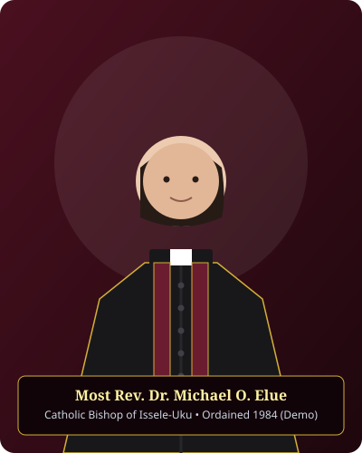
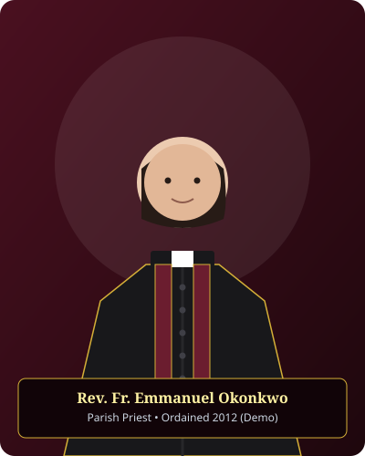

About Our Parish
Rooted in Apostolic Tradition, United in the Holy Eucharist, and Flourishing in Ugbolu, Delta State.
Our Mission
To proclaim the saving Gospel of Jesus Christ with apostolic fidelity, celebrate the sacred mysteries of the Holy Eucharist with reverence, foster deep spiritual and moral formation among families, and bear active witness to Catholic charity throughout Ugbolu and its neighbouring communities.
Our Vision
To be a vibrant, holy, and hospitable Catholic community where every baptized person is ignited with missionary zeal, formed in sound Catholic doctrine, grounded in liturgical prayer, and equipped to serve God and neighbour in truth, justice, and self-sacrificing love.
Parish Pillars
- Eucharistic Centrality: The Mass is our life source.
- Apostolic Fidelity: Unwavering obedience to Catholic doctrine.
- Communion & Fraternal Love: One body in Christ.
- Compassionate Charity: Care for the poor and vulnerable.
- Youth & Family Nurture: Catholic home formation.
Parish History
The Catholic community of SS Peter and Paul, Ugbolu, had its humble beginnings as an outstation administered under the pastoral solicitude of missionary priests in the Asaba territory. As the town of Ugbolu expanded along the vital commercial and agricultural artery connecting Asaba to Illah and the River Niger basin, Catholic families gathered for Sunday prayers and catechism under temporary thatched shelters.
Through the unwavering generosity, sacrifice, and dedication of pioneer Catholic men and women, land was graciously allocated in Ugbolu for the erection of a permanent sanctuary. With the canonical erection of the Catholic Diocese of Issele-Uku in 1973 by the Holy See, the community gained renewed pastoral momentum.
Patronage of Saints Peter and Paul
The parish was consecrated under the patronage of the glorious Apostles Peter and Paul to symbolize both immovable doctrinal firmness (the Rock of Peter) and dynamic evangelistic fervour (the Sword of the Spirit of Paul).
Over subsequent decades, the parish has flourished into a vibrant centre of Catholic worship. A stately church building, a dedicated perpetual adoration chapel, a parish rectory, and the catechetical hall have been constructed. Today, SS Peter and Paul Parish shepherds thousands of Catholic souls across multiple quarters of Ugbolu, nurturing vocations to the priesthood and religious life and fostering numerous lay apostolates.
Catholic Diocese of Issele-Uku
SS Peter and Paul Parish, Ugbolu, is an integral constituent parish of the Catholic Diocese of Issele-Uku, situated within the Asaba Deanery.
The Catholic Diocese of Issele-Uku is shepherded by our beloved Chief Shepherd, Most Rev. Dr. Michael Odogwu Elue, Catholic Bishop of Issele-Uku, with his episcopal cathedra at Saint Paul's Cathedral, Issele-Uku. Under Bishop Elue's episcopal guidance, the diocese continues to expand pastoral boundaries, build schools and hospitals, and deepen Catholic faith formation across Delta North.

Most Rev. Dr. Michael Odogwu Elue
Catholic Bishop of Issele-Uku
See: St. Paul's Cathedral, Issele-Uku, Delta State, Nigeria
Parish Clergy & Pastoral Leadership
Dedicated Catholic priests ordained to lead the sacraments, offer the Holy Sacrifice, and shepherd the faithful in Ugbolu.

Rev. Fr. Emmanuel Okonkwo
Ordained for the Catholic Diocese of Issele-Uku in 2012. Fr. Emmanuel shepherds the parish with deep devotion to the Holy Eucharist, liturgical dignity, and family life. He oversees the Parish Pastoral Council and parish administrative developments.
Appointments: Through the Parish Secretariat

Rev. Fr. Augustine Nwabuokei
Ordained in 2020 for Issele-Uku Diocese. Fr. Augustine coordinates youth activities, altar servers formation, Holy Childhood Association, and hospital visits. He is deeply committed to Christian discipleship and catechism.
Youth Consultation: Saturdays after 4:00 PM fellowship
Parish Pastoral Staff & Council Executives (Demonstration)
Oversees baptismal registers, catechism classes, and RCIA converts.
Knight of St. Mulumba; liaises with lay pious societies and church infrastructure committees.
Coordinates parish documentation, pastoral meeting minutes, and diocesan communiques.
Our Patron Saints: Peter & Paul
Why our parish looks to Saints Peter and Paul as heavenly protectors and spiritual beacons.
Saint Peter the Apostle
The Rock • Prince of the ApostlesSimon son of Jonah, a Galilean fisherman, confessed Jesus as "the Christ, the Son of the living God." Christ conferred upon him the name Cephas (Rock) and entrusted him with the Keys of the Kingdom of Heaven (Matthew 16:18-19). Peter was martyred in Rome under Emperor Nero, crucified upside down in humble deference to his Lord.
Saint Paul the Apostle
Apostle to the Gentiles • Doctor of GraceSaul of Tarsus, a zealous Pharisee, encountered the Risen Christ on the road to Damascus. Transformed by divine grace, he travelled across the Mediterranean world preaching the Gospel and authoring fourteen inspired Epistles. Beheaded in Rome, his martyrdom crowned a life totally spent for Christ: "I have fought the good fight, I have finished the race, I have kept the faith" (2 Timothy 4:7).